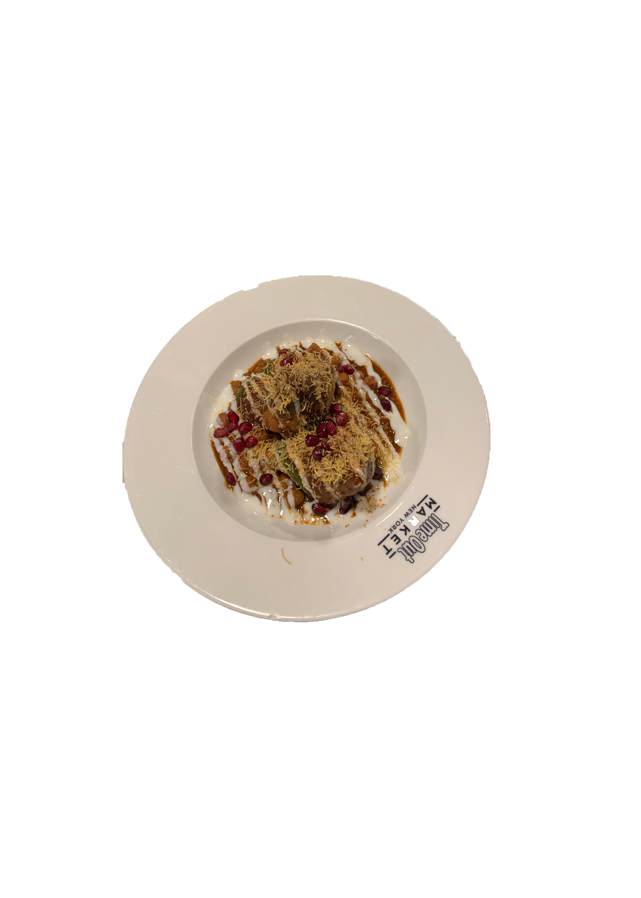

A popular South Asian appetizer, Chaat Papdi is a versatile dish that pairs well with many different sauces. The textures in this dish are what make it one of my favorites, providing crunch and flavor in every bite.

📝 Ingredients
For the Papdi
1 cup all-purpose flour (maida)
1/4 cup semolina (sooji)
1/4 teaspoon carom seeds (ajwain)
1/4 teaspoon salt
2 tablespoons oil
Water (as needed for kneading)
For the Toppings
1 cup boiled and cubed potatoes
1 cup boiled chickpeas (chole)
1/2 cup chopped tomatoes, cucumbers, onions
1/4 cup chopped cilantro
1/4 cup pomegranate seeds (optional)
1/4 cup sev (crispy chickpea noodles)
1/4 cup crushed papdi (extra, for topping)
For the Chutneys
Tamarind Chutney
1 cup tamarind pulp
1/2 cup jaggery (or sugar)
1/2 teaspoon black salt
1/2 teaspoon red chili powder
Salt to taste
Green Chutney
1 cup fresh cilantro
1/2 cup fresh mint leaves
2-3 green chilies
1 teaspoon cumin seeds
1-2 tablespoons lemon juice
Salt to taste
📝 Recipe
Mix all the dry ingredients for the papdi and add oil. Gradually add water and knead into a firm dough. Roll out thin, cut into small rounds, and fry until crisp and golden brown.
In a bowl, mix the boiled potatoes, chickpeas, onions, tomatoes, cucumbers, and cilantro.
Prepare the tamarind chutney by cooking all the ingredients together until thickened. Blend all the green chutney ingredients to a smooth paste.
Mix yogurt with water and spices.
To assemble, place papdi on a plate, top with the mixed veggies, drizzle with yogurt mixture, tamarind chutney, and green chutney. Sprinkle with sev, extra crushed papdi, and pomegranate seeds.
Finally, add a sprinkle of chaat masala, roasted cumin powder, red chili powder, and black salt.